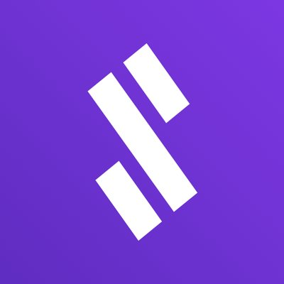

Signals Network
- Remote
- Signals Network
- Chief Software Architect & Backend Developer
- Jun 2018 - Present
Designing and building an automated trading platform for crypto exchanges, working closely with developers, executives and business to align technology with product vision and meet requirements for performance, security, code quality and scalability of the product.
Read more about the architecture and overall design of the system on the Signals Tech Blog.
RWS Moravia
- Remote
- RWS Moravia
- Freelance .Net Developer
- April 2016 - Present
I was working on multiple projects for this client. Some of them were focused on the internal systems, where I was analyzing the business requirements from the
production teams and designing a solution, which I afterward implemented together with the development team.
Then there were integrations projects, where I was building services responsible for real-time data exchange and transformation between third-party systems and internal applications.
Last but not least I also participated in an infrastructure project focused on providing a set of best practices, systems, and internal libraries for the in-house developers, who needed to support long-running workflows,
BPMN processes, asynchronous communication, real-time monitoring, or any other non-trivial functionality in their services.
Elekos
- Nitra
- Elekos
- Freelance .Net Developer
- Februrary 2017 - September 2017 (onging support)
I have created a web-based information system supporting business processes in Elekos company,
which is helping their clients to fulfill the obligations of waste producers according to the environment law.
The information system consists of two separate ASP.NET MVC applications - client portal, and administration system for the employees.
The client portal allows the clients to submit reports with information about the kinds and amounts of produced waste on a quarterly basis.
The core features of the administration system are clients evidence, automatic email notifications for the clients, invoices generation,
CSV exports for the government reports, or data analytics dashboards with searching, sorting, and filtering capabilities.
FNZ
- Brno
- FNZ
- Fullstack .Net Developer
- February 2014 - December 2015
I worked in team responsible for building complex financial systems used by financial advisers and investors, developing real-time transaction processing systems supporting investment securities trading.
The job required close collaboration with the business analysts team from the UK, which involved my assistance in the preparation of software requirements and specifications. For the first 9 months, I worked on back-office applications in ASP.NET Web Forms,
then I moved to a client-facing application developed in ASP.NET MVC 4 and Typescript.
Masaryk University / Siemens (Internship)
During my studies, I worked with a team of Ph.D. students on MS Visio add-on SCStudio.
My part of the job was programming functionality responsible for capturing and analysis of real-time network traffic communication
followed by the presentation of crucial information in diagrams.